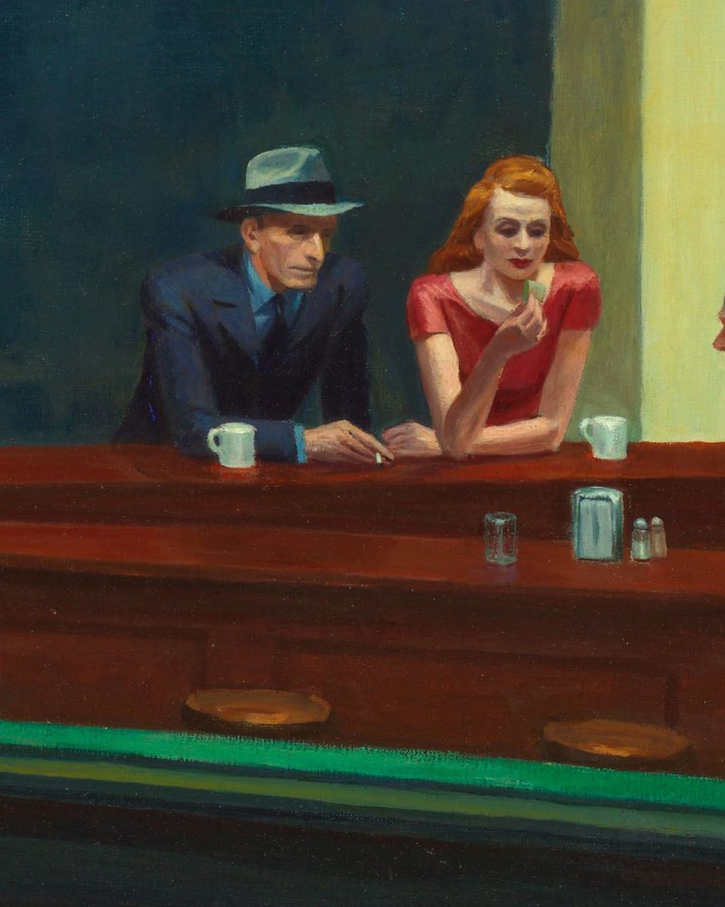
And there's no way in.
Swipe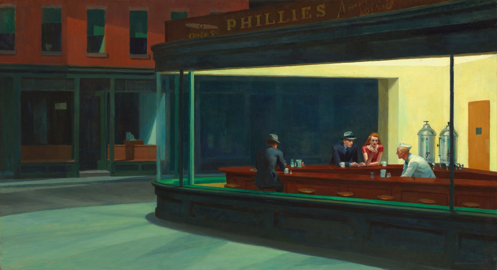
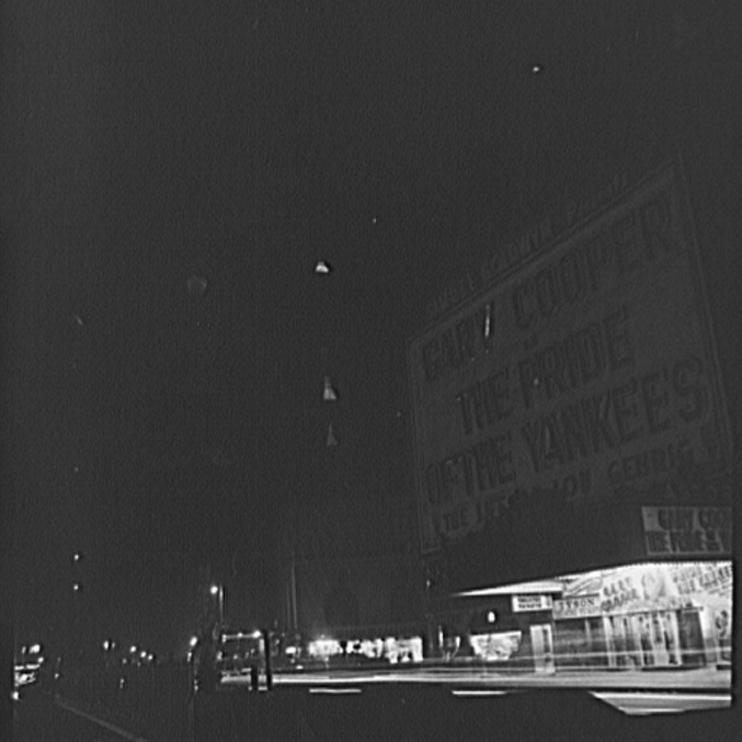
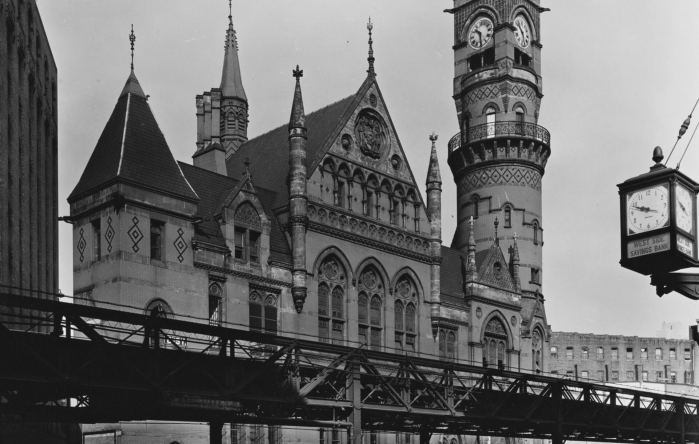
Hopper said it was suggested by a restaurant on Greenwich Avenue where two streets meet.
Then he simplified the scene a great deal.
Sleuths still argue which corner.
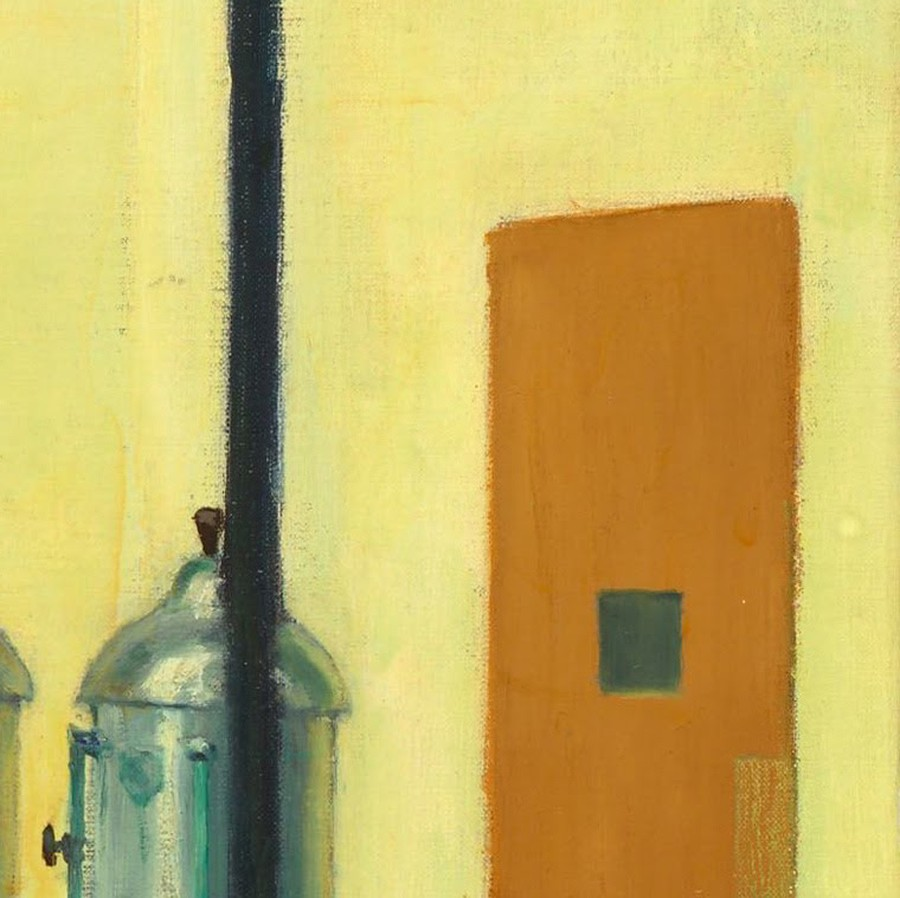
There isn't one. The museum notes the diner has no entrance. The only door is at the back, by the urns. A wall of glass seals them in, and you out.
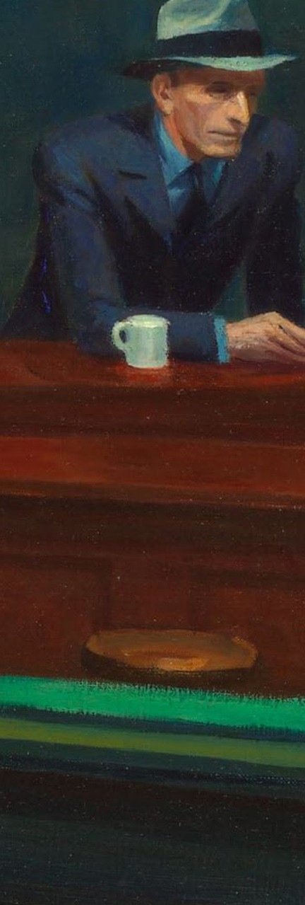
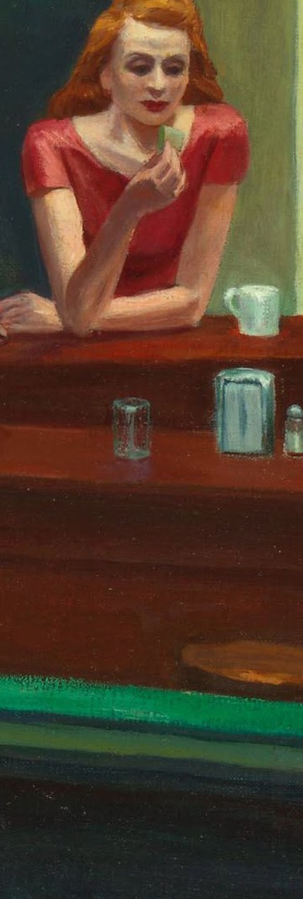
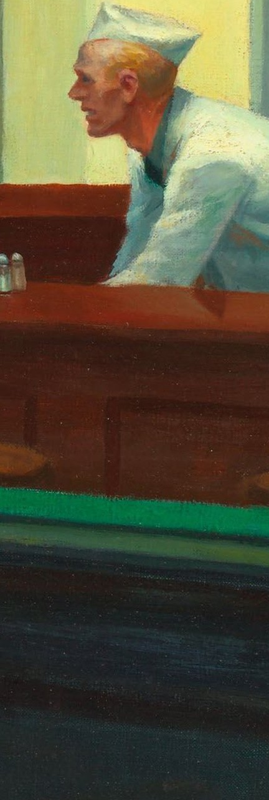
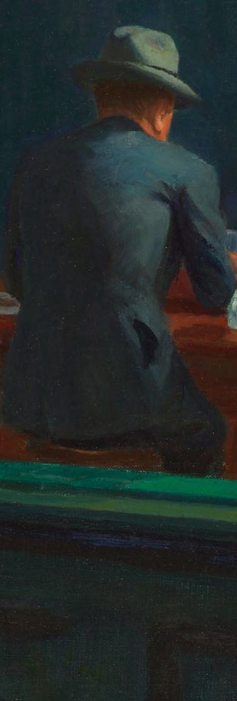
Man night hawk (beak) in dark suit, steel grey hat…Jo Hopper · the couple's record book, 1942
Jo logged his pictures in their ledger. Here the customers became night hawks. The title stuck. So did the nose.
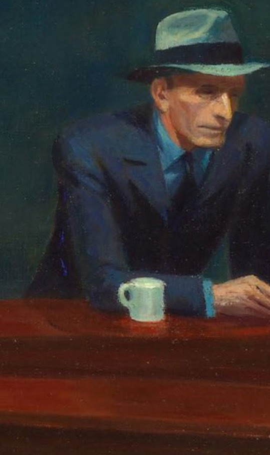
The “beak”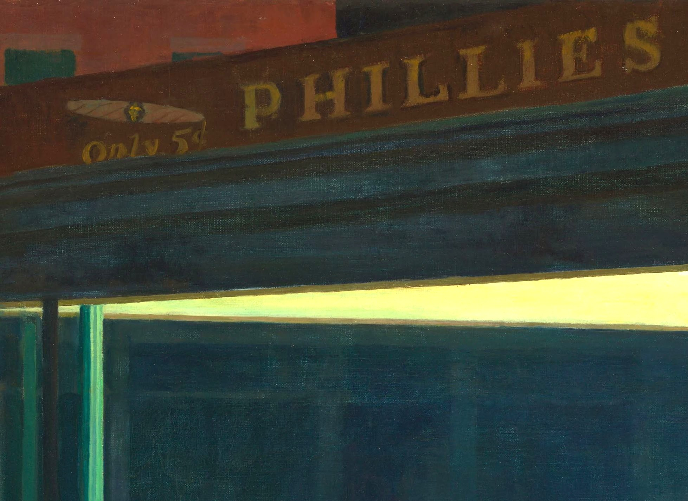
The diner has no name. Above it, Hopper painted an ad for Phillies, a cheap cigar. Jo's notes: “Phillies 5¢ cigar.” An everyday nickel smoke, glowing over an empty street.
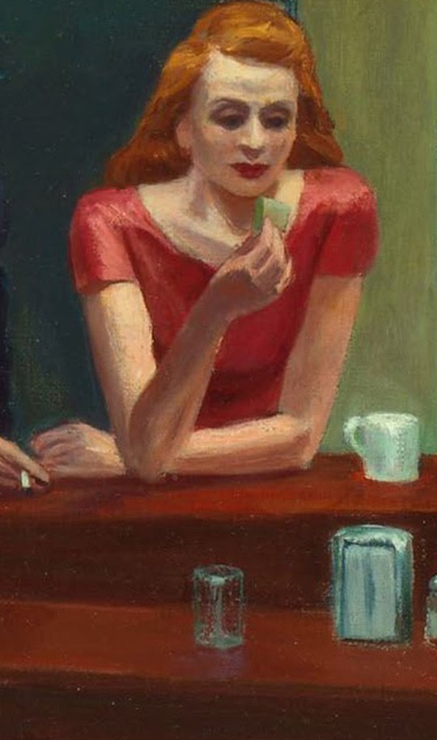
Jo wrote: “E. posed for the two men in a mirror and I for the girl.” Hopper, twice. His wife, in red. Painted as strangers.
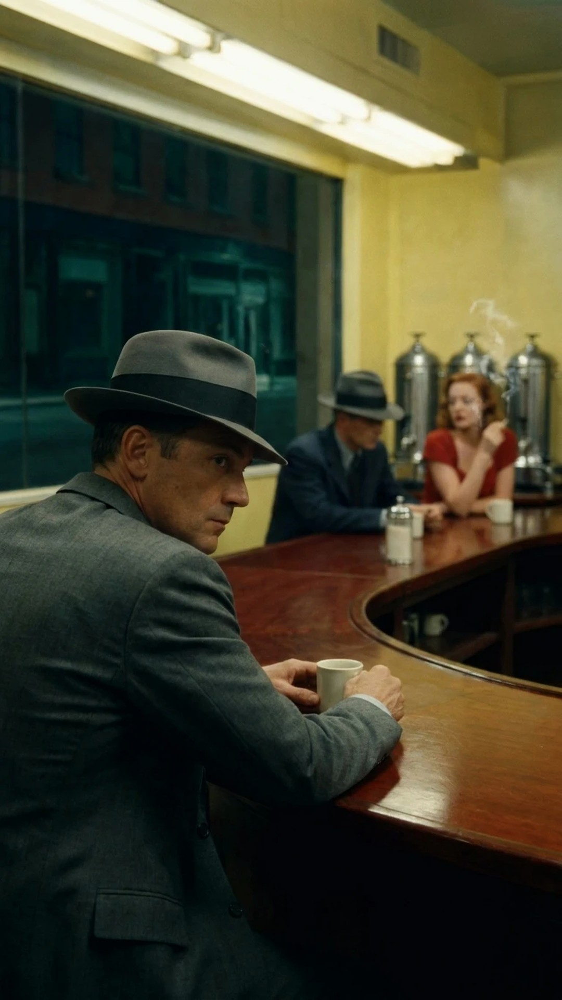
We brought all four to life. Watch the film on our page.